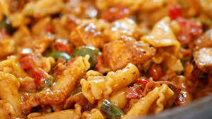

Chicken Pasta Recipe
recipe by Ammara Zahid

Ingredients:
- As needed Water
- 200g Macaroni
- As per taste Salt
- 1 tbsp Cooking Oil
- 10g Carrot
- 20g Cabbage
- 1 tbsp White Pepper Powder
- 1 tbsp Tomato Ketchup
- 2 tbsp Olive Oil
- 1 tbsp black pepper powder
- 1 tbsp chilli sauce
- 1 tbsp soya sauce
- 1 tbsp vineger
- 2 chopped onions
- 2 chopped tomatoes
- 2 chopped green chilli
Cooking Method:
- In a pan, add water, macaroni, salt, cooking oil and bring to boil.
- 2. In a pan,add oil,add onions and let them light brown after that add tomatoes as well and broiling them
till
paste and after that add Cabbage and Carrot,green chilli and all taste flavours and broiling them after
brioling
add macroni and sauces as well and serve.